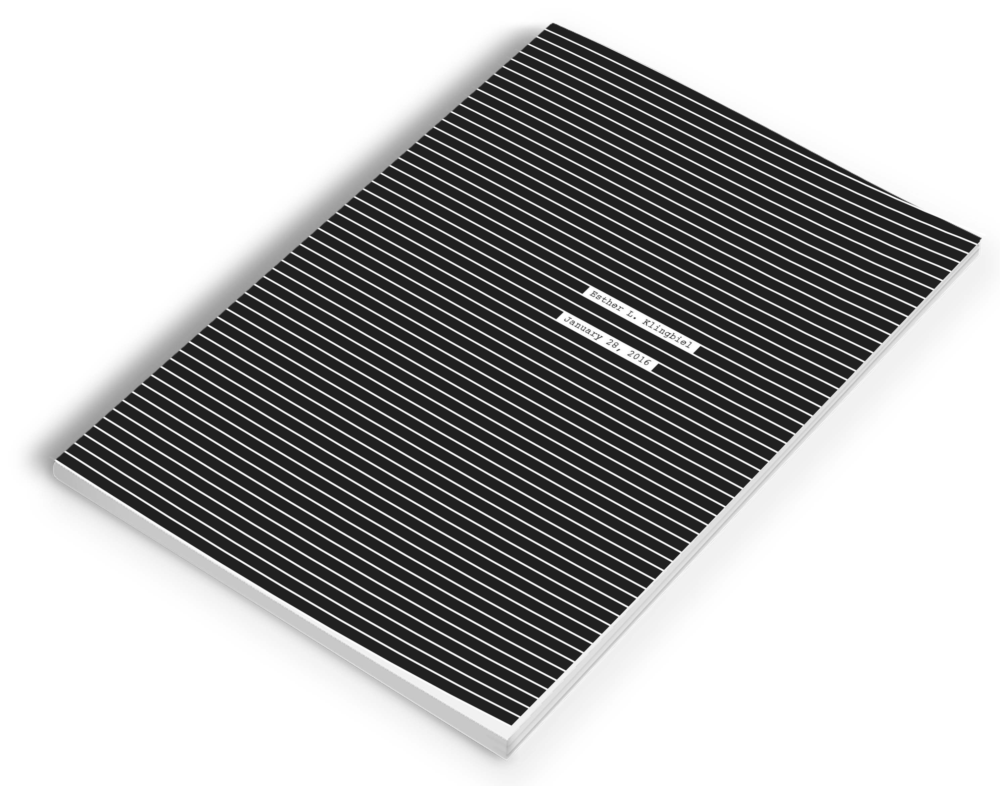
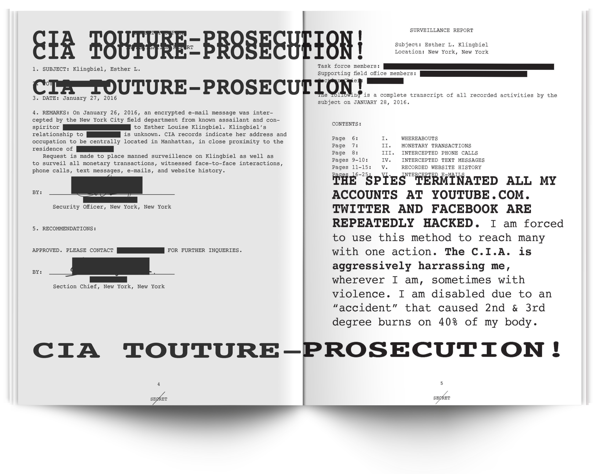
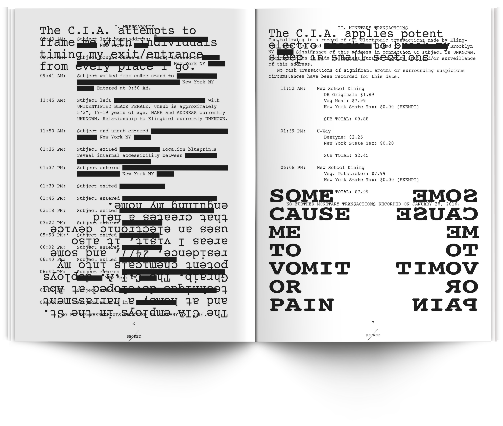
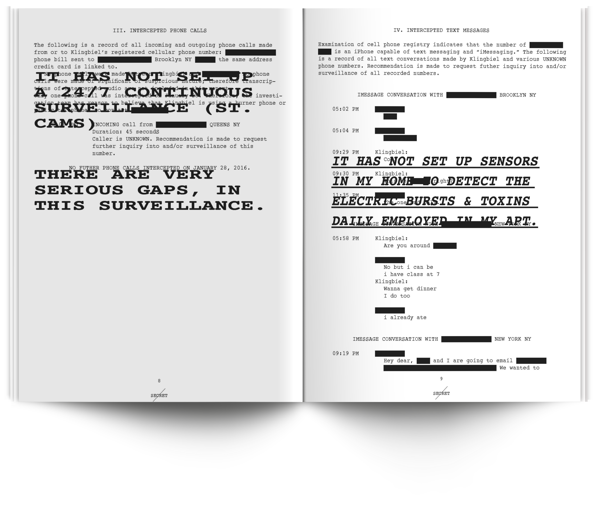
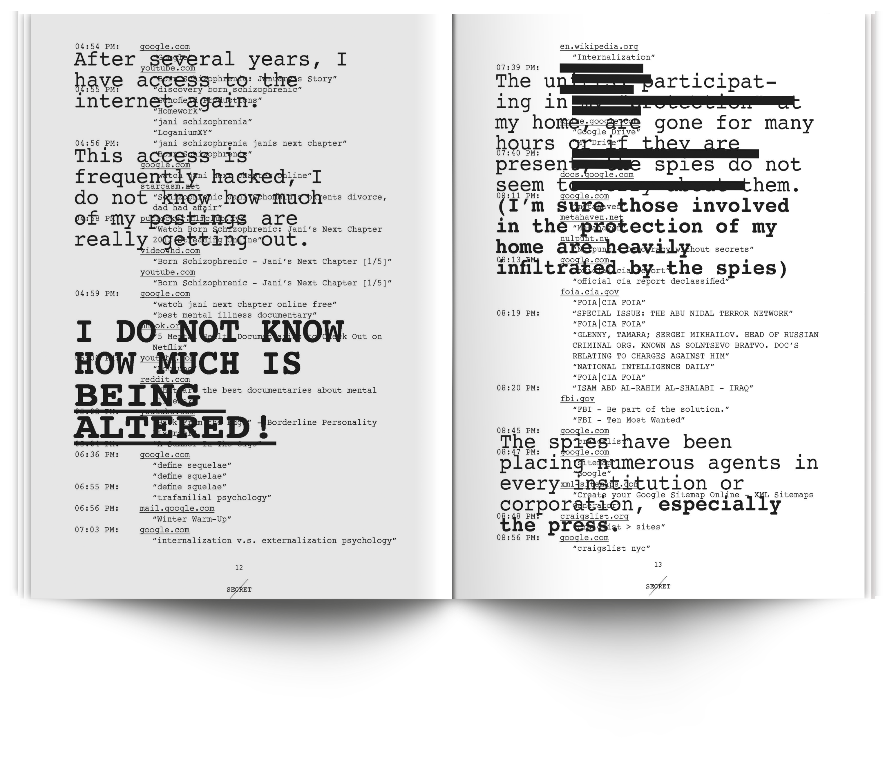
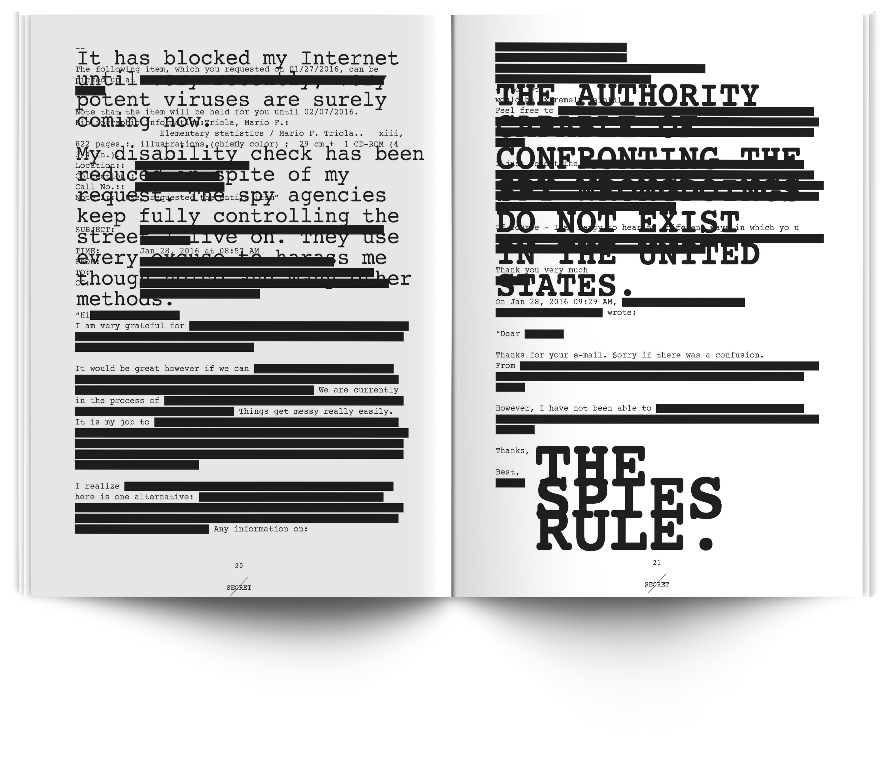
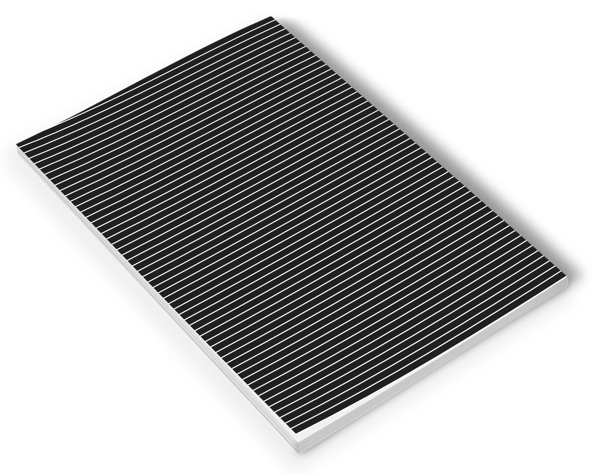

This book documents one day of my life (January 28, 2016) through the lens of a CIA surveillance report on my activity and whereabouts of that day (including my phone records, web history, and credit card transactions). I had the idea after finding loose slips of paper (on multiple occasions) in my old neighborhood that an anonymous person had thrown on the street—accusing the government of surveilling them at all times and controlling electricity and poisonous gases in their apartment (among other claims). The overlaid text included here is sourced directly from this found material.
This project is meant to be ironic because on this day, absolutely nothing happened to me that is of any interest to the government, or really anyone at all. I went to class, bought lunch, texted some friends, and surfed the web. The design of this book is meant to emphasize internal misperceptions. The person who threw these pieces of paper around was paranoid: I juxtapose their fears with the reality of everyday life by using bold, disorganized design to communicate boring and useless information.






Size: 8.5" x 11"
Page Count: 26
Binding: Saddlestitch
Typeface: Courier